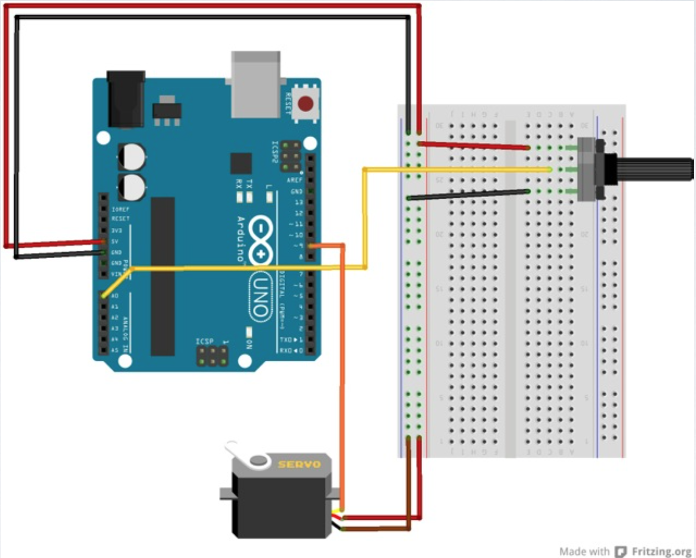
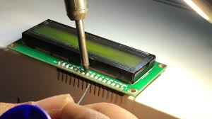
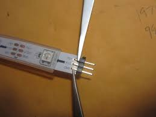
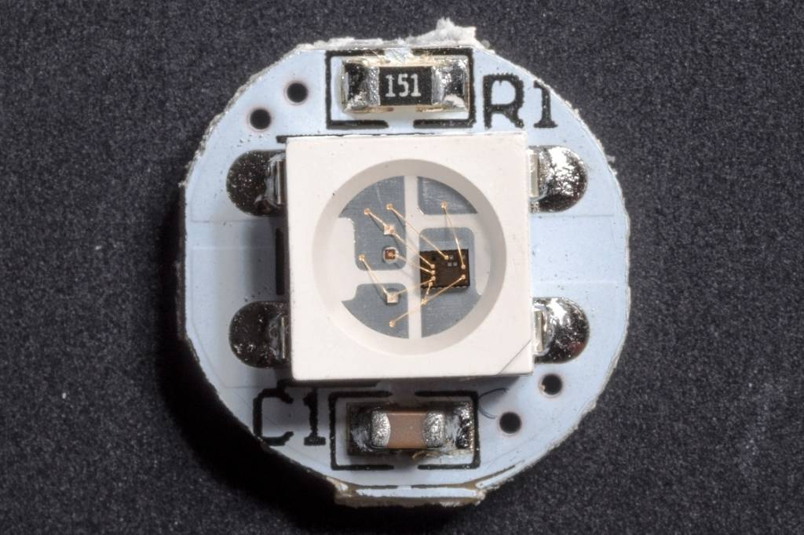

SI TBMA: Microcontroller Workshop: Day 2
SI TBMA: Microcontroller Workshop: Day 2
SI TBMA: Microcontroller Workshop: Day 2
SI TBMA: Microcontroller Workshop: Day 2
Slides are here:
https://mhellar.github.io/saam_mcu/day1
- Warm up: getting to a known good state
- Soldering exercise
- Introduction to addressable LED's
- Programming exercise: Writing custom functions
- Sensor lecture
- Case study: Breathing Machine, Lynn Hershman Leeson
- Detecting proximity with the HC-04 ultrasonic rangefinder
- Introduction to the Johnny Five API for Internet-connected projects
- Programming exercise: Build a lamp connected to the DC Metro(WMATA) API
Topics for Today:
Controlling a Servo

Servo_Sweep.ino
#include
Servo myservo; // create servo object to control a servo
// a maximum of eight servo objects can be created
int pos = 0; // variable to store the servo position
void setup() {
myservo.attach(9); // attaches the servo on pin 9 to the servo object }
void loop() {
for(pos = 0; pos < 180; pos += 1) // goes from 0 degrees to 180 degrees
}
{ myservo.write(pos); delay(15);
// in steps of 1 degree
// tell servo to go to position in variable 'pos'
// waits 15ms for the servo to reach the position
}
for(pos = 180; pos>=1; pos-=1) // goes from 180 degrees to 0 degrees
{
myservo.write(pos); // tell servo to go to position in variable 'pos'
delay(15); // waits 15ms for the servo to reach the position
}
Servo With Potentiometer
Upload SERVO_KNOB.INO
Soldering

Soldering
 

"You don't need anyone's permission to create something great"
Introduction to Addressable LEDS


Basic LEDS Need a lot of Wiring

Addressable LEDs provide circuitry to communicate serially

Each LED has a chip to receive, decode, drive LED’s and propagate data
They are chainable, fairly cheap and have their own resistors etc..

You can drive 10000's from 1 microcontroller
Adafruit has branded these Neopixels

You can get them for half the price on Ebay as ws2812's

These have a 5v, GND and DIN pin

Connect 5v to 5v, GND to GND and DIN to Pin6
Import the NeoPixel Library

Import the NeoPixel Library

Let's try some examples and write our own code!
FastLED
Fast LED LibraryAPA102
APA102 aka “Superled”- LCD RS pin to digital pin 12
- LCD Enable pin to digital pin 11
- LCD D4 pin to digital pin 5
- LCD D5 pin to digital pin 4
- LCD D6 pin to digital pin 3
- LCD D7 pin to digital pin 2
Additionally, wire a 10k pot to +5V and GND, with it's wiper (output) to LCD screens VO pin (pin3). A 220 ohm resistor is used to power the backlight of the display, usually on pin 15 and 16 of the LCD connector